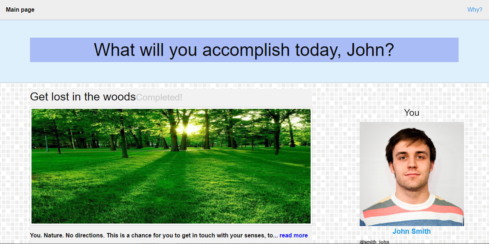
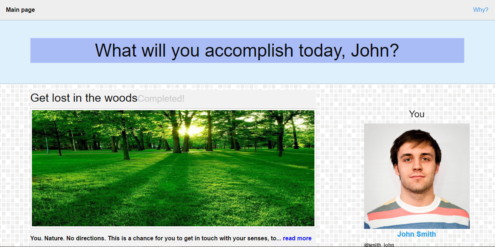

Documentacion de todo lo que hicimos, y descubrimos al crar la pagina web.
Continuar a la descripcion del usuarioEducación básica, poder leer y entender información escrita. La puede usar cualquier género, sin importar su situación familiar o económica.
ContinuarCualquiera que quiera hacer algo para sí mismo y los demás, que sienta la necesidad de hacer un cambio a su alrededor a través de pequeñas o grandes acciones.
ContinuarConocimiento basico de tecnologia para poder accesar la plataforma y actualizarla y también que el usuario se acostumbre a utilizar esta plataforma diariamente y utilizarla de forma cercana.
ContinuarMedio. Conocimiento básico de cómo usar una computadora/smartphone. Conocer de logos y signos básicos para poder navegar en la aplicación. Saber usar redes sociales no es obligatorio.
ContinuarUso diario, y constante uso de la plataforma ya que mantiene un registro del usuario. Usuarios regulares.
ContinuarLas personas tienden a tener una vida muy complicada, con lo que tienden a olvidar las cosas importantes en la vida. Se busca a personas que estén en busca de la humildad, amistad, y ayudarse los unos a los otros.
 Continuar
Continuar
Nuestra audiencia es aquella que use algún tipo de dispositivo electrónico con acceso a internet. Hay influencia de las redes sociales, conversaciones con conocidos y publicidad. Es gente que quiera un escape de sus actividades cotidianas, y tenga el impulso de hacer cosas por sí mismo, que lo lleven a mejorarse a sí mismo y a otros. Los dispositivos más usados son de sistema operativo iOS o Android.
ContinuarLos arquetipos en los que nos concentraríamos son todos aquellas personas que sean creadores, aventureros, compartidos, amables, activos y de mente abierta.
 Continuar
Continuar
Queremos que el usuario se sienta cómodo, que sienta que tiene completo dominio y pueda navegar fácil de un lugar a otro. Conforme vaya usando la aplicación, irá obteniendo pequeñas recompensas, palpables y acumulativas. Podrá entrar en contacto con otros usuarios, y fácilmente formar conecciones nuevas. Se irá descubriendo a sí mismo poco a poco, aprendiendo de sí y sus acciones. Se sentirá capaz de hacer cosas, y crear cambio en el mundo.
 Continuar
Continuar
Se podrá, en algún futuro, accesar desde cualquier dispositivo iOS, Android, Windows, Mac, Linux, etc.
ContinuarNuestra audiencia puede ser muy variada, toda aquella que use las redes sociales para buscar cosas nuevas en las cuales involucrarse, cualquier persona que se haya inscrito en GISHWES. Cualquier persona que le guste tomar fotos o videos de experiencias que tenga, que esté involucrado en causas sociales, algún deporte extremo, o cualquier otra actividad en donde estén fuertemente involucrados que deje algún impacto a sí mismos o a otros.
 Continuar
Continuar
Le daremos mucha importancia a tener un diseño estable, intuitivo y divertido. Nunca se le detendrá al usuario con una pantalla de “cargando…”, siempre habrá algo que llame la atención al usuario, y lo mantenga atento. La apariencia general irá cambiando de acuerdo a cómo se haya usado la aplicación hasta ese momento, se irá adaptando a los usuarios y a sus preferencias. Podrán fácilmente personalizar su interfaz, y organizar las herramientas a su manera.
Queremos que se nos conozca, y los usuarios nos escogan por la experiencia que saben les podemos ofrecer. Que naturalmente sientan que pueden entrar y salir con facilidad, con un uso continuo e interacción constante con otros usuarios. Se dará mucho énfasis al contenido que llegue públicamente a los otros usuarios, para que cualquier acción de un usuario pueda servir de inspiración a otros. Igualmente, podrán fácilmente darse retroalimentación unos a otros y dar su opinión. Alguna frase que podría representar lo que se quiere que los usuarios piensen podría ser: “Be the change you want to see in the world”.
 Continuar
Continuar
1. Un botón para crear tu propio experiencia/meta.
2. Agregar un botón para reportar meta obscena/inapropiada.
3. Agregar una sidebar fija en vez del menú actual para cambiar entre tabs.
4. Implementar una opción para agregar nuevos amigos.
5. Implementar que al crear una nueva experiencia tengas opción de quién ve el post, privacidad.
6. Utilizar recompensas que te den empresas por cumplir una meta usando de su producto/servicio.
7. Ver artículos que estén relacionados a los beneficios que trae cumplir esta meta.
8. Cambiar la manera en que están organizados los posts.
Haciendo este análisis, podemos entender bien al usuario y adaptar nuestro producto lo mejor posible a las necesidades del usuario y los objetivos establecidos. Aparte con la observacion de toda la remas informacion se puede crear una pagina excelente.
Carlos Martell A01225920
Fernando Partida A01631920
Jesús Alvarez A01039332


 
